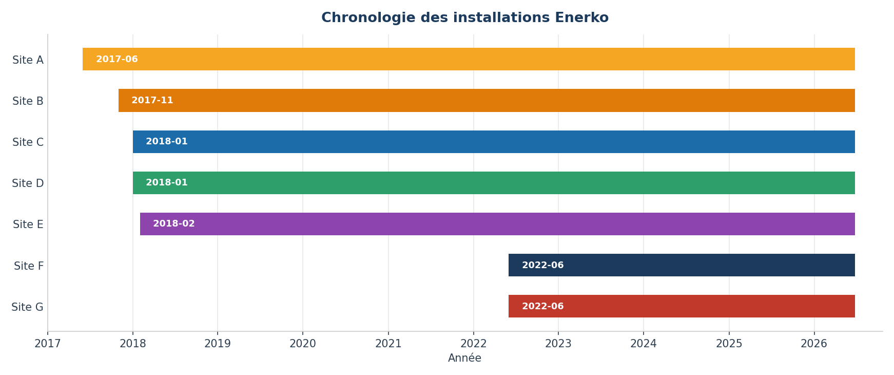
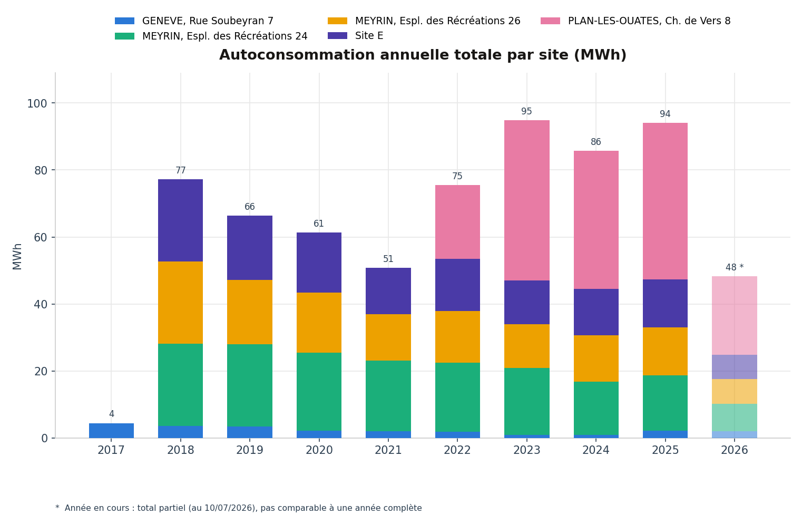
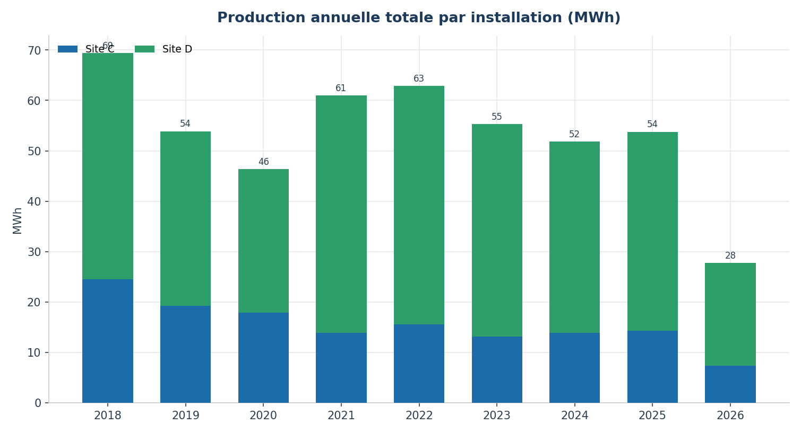
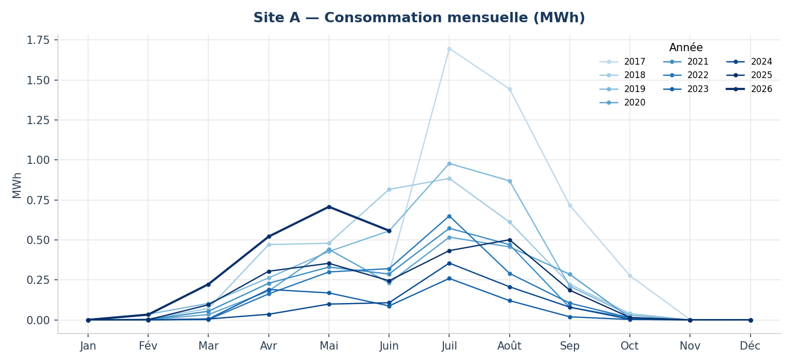
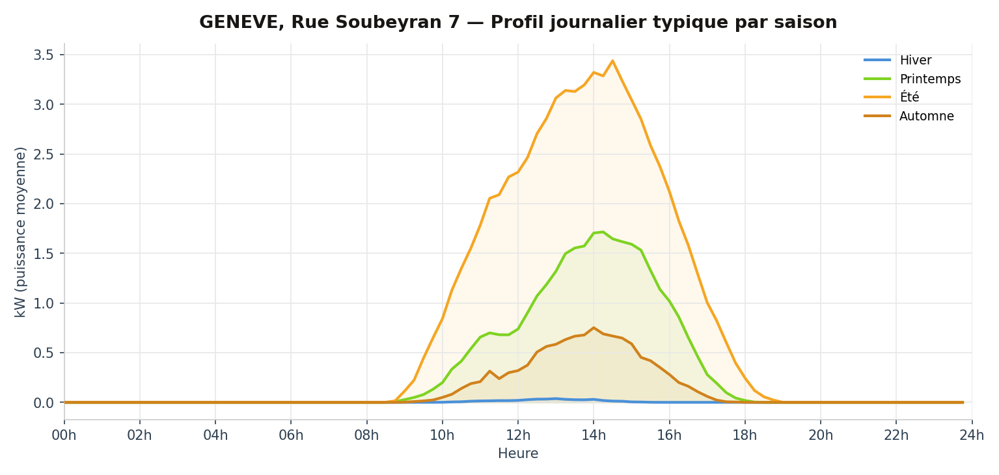
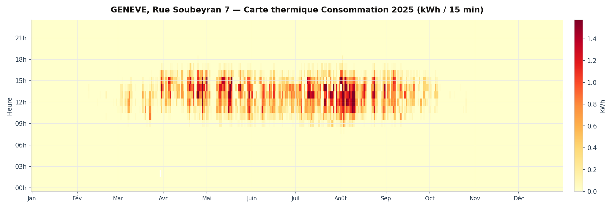

Nos installations photovoltaïques
Enerko finance et exploite des installations photovoltaïques en autoconsommation collective à Genève. Cliquez sur une fiche pour le détail complet — description technique, financement, communauté d'autoconsommateurs et données mesurées.
GENÈVE, Rue Soubeyran 7
Rue Soubeyran 7, 1202 Genève, Suisse
- Surface180 m²
- Puissance29.9 kWc
- Production électrique30'000 kWh/an
- Autoconsommation PV93%
- Autonomie PV du bâtiment19%
- Date de mise en service2016
- Coût d'installation60'000 CHF
- Rétribution unique16'000 CHF
- Installateur PVSolstis SA
MEYRIN, Espl. des Récréations 24
Esplanade des Récréations 24, 1217 Meyrin, Suisse
- Surface740 m²
- Puissance121 kWc
- Production électrique130'000 kWh/an
- Autoconsommation PV59%
- Autonomie PV du bâtiment31%
- Date de mise en service2017
- Coût d'installation200'000 CHF
- Rétribution unique55'000 CHF
- Installateur PVSolstis SA
PLAN-LES-OUATES, Ch. de Vers 8
Chemin de Vers 8, 1228 Plan-les-Ouates, Suisse
- Surface483 m²
- Puissance97.5 kWc
- Production électrique100'000 kWh/an
- Autoconsommation PV40%
- Date de mise en service2022
- Coût d'installation180'000 CHF
- Rétribution unique32'000 CHF
- Installateur PVSolstis SA
Évolution des installations
3 installations photovoltaïques actives, de juin 2017 à aujourd'hui. Chaque barre représente la période de mesure disponible pour une installation.

Vue d'ensemble annuelle
Totaux annuels par site, en MWh. Utilisez les boutons pour basculer entre autoconsommation et production.


Explorer par site
Choisissez d'abord le type de données, puis le site — seuls ceux disposant de ce type de mesure sont proposés. Un site d'autoconsommation est un bâtiment raccordé au réseau ; un site de production est une installation photovoltaïque.
Évolution mensuelle
Totaux mensuels en MWh — une courbe par année.

Profil journalier typique
Puissance moyenne sur 15 min, par saison (kW).

Carte thermique
Intensité heure par heure sur l'année la plus récente disponible.
